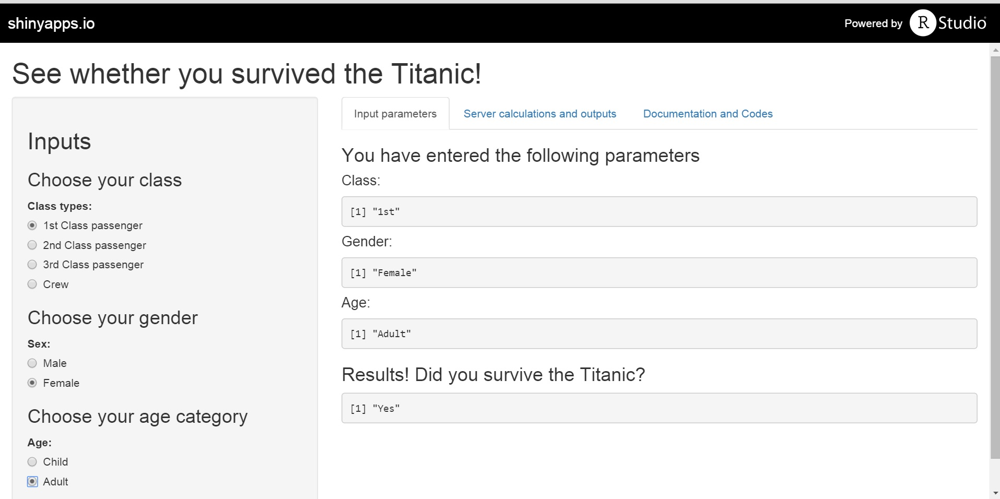

Choose your economic status (class), sex and age.
This application will tell you if you have survived the Titanic.

Lik Sin
Coursera Participant
Choose your economic status (class), sex and age.
This application will tell you if you have survived the Titanic.
data=data.frame(Titanic)
flatdata=NULL
for(i in 1:4)
{
flatdata=cbind(flatdata,rep(as.character(data[,i]),data$Freq))
}
flatdata=data.frame(flatdata)
names(flatdata)=names(data[1:4])
set.seed(150)
inTrain = createDataPartition(flatdata$Survived, p = 0.70,list=FALSE)
trainingset = flatdata[inTrain,]
testset = flatdata[-inTrain,]
modFit=train(Survived ~ ., data=trainingset, model="rf")
predval <- predict(modFit, newdata=testset)
table(predval,testset$Survived)
##
## predval No Yes
## No 439 130
## Yes 8 83